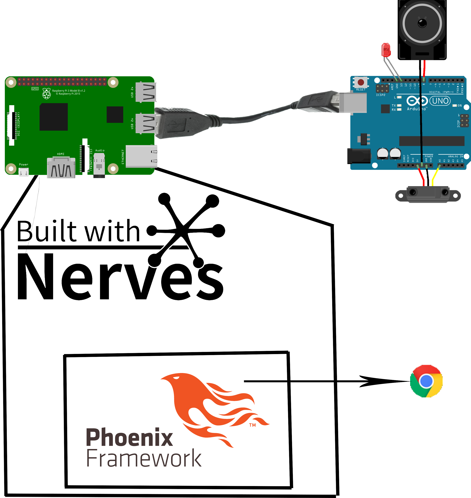

After establishing the components, a diagram was made which would later be used during the assembly of the project.

After making sure all the software is correctly installed, part that got tricky for a beginner, the first thing we did is use the Arduino IDE to develop a code in C which sets the corresponding pins to receive the info from the sensor. After that, we added to our code a part that sends the information through the USB serial, which will later be useful
Then we configured the Raspberry Pi, and by that we mean preparing it to work as a server, using Nerves and the Phoenix Framework.
The work on this project is still in progress, and updates to this page will be applied.
The project has a README file on GitHub, where the source code is located as well, in order to enable other team members and highschool students replicate it too.